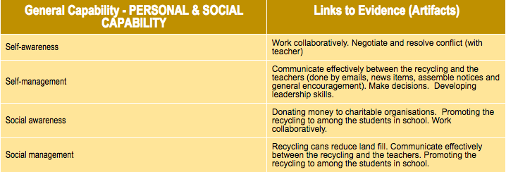

Personal and Social
I have developed my personal and social capability in many ways in and out of school. I have developed my self awareness by working collaboratively with my peers during group assignments and activities. I have also developed this skill when I referee soccer games. When refereeing I need to work in a team to make sure we make the right decisions and calls. When refereeing I also show self management because I have to be at games on time as well as get through the necessary steps in order to make the sure the pitch is safe to play on and everything is set up correctly. Although I don’t show social awareness very often out side of school I do use it on occasion. The final part is social management that I commonly use when doing group assignments because we have to organise our time effectively and divide work evenly.